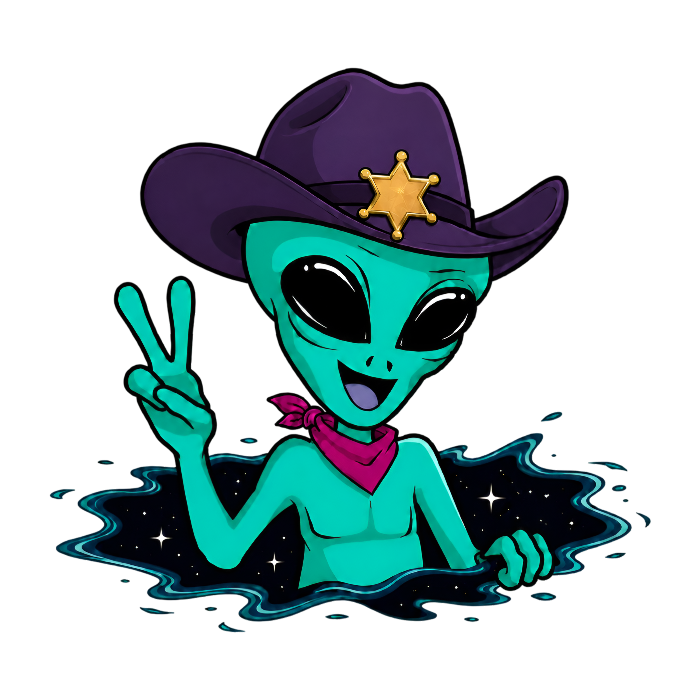

Kevin Fowler — UX Designer


User Interviews
Usability Testing
Heuristics
Personas
Journey Maps
Empathy Maps
Task Flows
Benchmarking
Figma
Wireframing
Prototyping
Hi-Fi Design
Design Systems
Typography
Info Architecture
Microinteractions
HTML
CSS
JavaScript
GSAP
Debugging
Accessibility
Responsive
GitHub
Case Studies
Greetings, Earthling!
Currently, I'm a senior at ASU working towards my degree in Human Systems Engineering.
One of my biggest professional influences came from four years managing 100+ staff at one of the largest non-profit zoos in the country. Welcoming nearly 1.4 million guests annually meant owning the full guest journey.
It taught me how to read people, communicate under pressure, and care deeply about cultivating a world-class experience at every touchpoint.
Little did I know I was doing UX long before I even knew what UX was. Now I get to do it on purpose! Turns out the zoo was just my first usability test.
More about me →4.24
Current GPA, ASU
Ira A. Fulton
Ira A. Fulton
4+
Years leading 100+ staff at the Phoenix Zoo
2027
Expected graduation,
Spring
Spring
5+
Years coaching youth sports

Awaiting Your Signal
I'm looking to grow, learn, and create work that matters.
If you're searching for someone with fresh eyes and a passion for perfection.